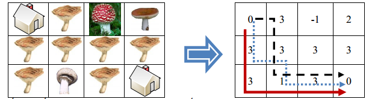

Một cháu gái hàng ngày được mẹ giao nhiệm vụ đến thăm bà nội. Từ nhà mình đến nhà bà nội cô bé phải đi qua một khu rừng có rất nhiều loại nấm. Trong số các loại nấm, có ba loại có thể ăn được. Cô bé đánh số ba loại nấm ăn được lần lượt là 1, 2 và 3. Là một người cháu hiếu thảo cho nên cô bé quyết định mỗi lần đến thăm bà, cô sẽ hái ít nhất hai loại nấm ăn được để nấu súp cho bà. Khu rừng mà cô bé đi qua được chia thành lưới ô vuông gồm n hàng và m cột. Các hàng của lưới được đánh số từ trên xuống dưới bắt đầu từ 1, còn các cột – đánh số từ trái sang phải, bắt đầu từ 1. Ô nằm giao của hàng i và cột j có tọa độ (i, j). Trên mỗi ô vuông, trừ ô (1,1) và ô (n, m) các ô còn lại hoặc có nấm độc và cô bé không dám đi vào (đánh dấu là -1), hoặc là có đúng một loại nấm có thể ăn được (đánh dấu bằng số hiệu của loại nấm đó). Khi cô bé đi vào một ô vuông có nấm ăn được thì cô bé sẽ hái loại nấm mọc trên ô đó. Xuất phát từ ô (1,1), để đến được nhà bà nội ở ô (n, m) một cách nhanh nhất cô bé luôn đi theo hướng sang phải hoặc xuống dưới.

Bạn hãy giúp cô bé tính xem có bao nhiêu đường đi thỏa mãn yêu cầu trên (không qua nấm độc và qua ít nhất 2 loại nấm ăn được).
Dữ liệu vào: gồm các dòng sau:
- Dòng thứ nhất là hai số nguyên n, m cách nhau một khoảng trắng ( 1 ≤ n,m ≤ 200)
- Trong n dòng tiếp theo, mỗi dòng là m số nguyên cách nhau một khoảng trắng. Các số nguyên biểu thị các loại nấm trong khu rừng (-1: nấm độc; 1, 2, 3: các nấm loại 1, 2, 3). Riêng 2 ô (1,1) và (n,m) có giá trị là 0 biểu thị nhà cô bé và nhà bà nội.
Dữ liệu ra:
- Là số lượng đường đi thỏa mãn yêu cầu. Vì số lượng này có thể rất lớn nên chỉ cần in ra 7 chữ số cuối (mod 107)